<title>IBS Tracker Competitor Study</title>
<link rel="preconnect" href="https://fonts.googleapis.com">
<link rel="stylesheet" href="https://fonts.googleapis.com/css2?family=Bricolage+Grotesque:opsz,wght@12..96,500;12..96,700&family=Atkinson+Hyperlegible:ital,wght@0,400;0,700;1,400&family=IBM+Plex+Mono:wght@400;500&display=swap">
<style>
/* Layout: single reading column (~72ch) with wide tables and screen strips that scroll inside their own boxes */
:root{
  --bg:#F6F7F4; --surface:#FFFFFF; --fg:#1C2321; --muted:#5D6862; --line:#DCE1DC;
  --accent:#B7790A; --accent-soft:#F6EAD1; --green:#2F6B4F; --green-soft:#E1EEE6; --red:#A63D2F; --red-soft:#F5E1DD;
  --display:"Bricolage Grotesque", "Avenir Next", system-ui, sans-serif;
  --body:"Atkinson Hyperlegible", "Segoe UI", system-ui, sans-serif;
  --mono:"IBM Plex Mono", ui-monospace, Menlo, monospace;
}
@media (prefers-color-scheme:dark){:root:not([data-theme="light"]){
  --bg:#141917; --surface:#1C2320; --fg:#E7ECE8; --muted:#9CA8A1; --line:#2F3934;
  --accent:#E3A73A; --accent-soft:#3A2E17; --green:#7DC39F; --green-soft:#1E3329; --red:#E58A7B; --red-soft:#3A221E; color-scheme:dark}}
:root[data-theme="dark"]{
  --bg:#141917; --surface:#1C2320; --fg:#E7ECE8; --muted:#9CA8A1; --line:#2F3934;
  --accent:#E3A73A; --accent-soft:#3A2E17; --green:#7DC39F; --green-soft:#1E3329; --red:#E58A7B; --red-soft:#3A221E; color-scheme:dark}
body{background:var(--bg);color:var(--fg);font-family:var(--body);font-size:16px;line-height:1.55;padding-inline:20px;padding-block:40px 80px}
main{max-width:76ch;margin:0 auto;display:flex;flex-direction:column;gap:44px}
h1,h2,h3{font-family:var(--display);line-height:1.15;text-wrap:balance;margin:0}
h1{font-size:clamp(2rem,5vw,2.8rem);font-weight:700;letter-spacing:-.01em}
h2{font-size:1.6rem;font-weight:700;padding-bottom:8px;border-bottom:2px solid var(--fg)}
h3{font-size:1.15rem;font-weight:700}
section{display:flex;flex-direction:column;gap:16px}
p{margin:0}
ul{margin:0;padding-left:1.2em;display:flex;flex-direction:column;gap:5px}
.eyebrow{font-family:var(--mono);font-size:.75rem;letter-spacing:.08em;text-transform:uppercase;color:var(--muted)}
.lede{font-size:1.1rem;color:var(--muted)}
.meta{font-family:var(--mono);font-size:.8rem;color:var(--muted)}
a{color:var(--green)}
a:focus-visible{outline:2px solid var(--accent);outline-offset:2px}
.scroll{overflow-x:auto;border:1px solid var(--line);border-radius:6px;background:var(--surface)}
table{border-collapse:collapse;width:100%;font-size:.88rem;min-width:760px}
th,td{text-align:left;vertical-align:top;padding:9px 11px;border-bottom:1px solid var(--line)}
th{font-family:var(--mono);font-size:.72rem;letter-spacing:.06em;text-transform:uppercase;color:var(--muted);font-weight:500;background:var(--bg)}
tr:last-child td{border-bottom:0}
.matrix td:nth-child(n+2):nth-child(-n+7){text-align:center;color:var(--green);font-size:1rem;width:64px}
.matrix th:nth-child(n+2):nth-child(-n+7){text-align:center}
td.num{font-family:var(--mono);font-variant-numeric:tabular-nums;white-space:nowrap}
.tag{display:inline-block;font-family:var(--mono);font-size:.7rem;padding:1px 7px;border-radius:99px;white-space:nowrap}
.in{background:var(--accent-soft);color:var(--accent)}
.gl{background:var(--line);color:var(--muted)}
.cat{border:1px solid var(--line);border-radius:6px;background:var(--surface);padding:18px 20px;display:flex;flex-direction:column;gap:12px}
.cols{display:grid;grid-template-columns:repeat(auto-fit,minmax(220px,1fr));gap:14px}
.cols>div{min-width:0;display:flex;flex-direction:column;gap:6px}
.lbl{font-family:var(--mono);font-size:.72rem;letter-spacing:.07em;text-transform:uppercase;font-weight:500}
.lbl.ok{color:var(--green)} .lbl.bad{color:var(--red)} .lbl.ind{color:var(--accent)}
.cat ul{font-size:.93rem}
.india{background:var(--accent-soft);border-radius:4px;padding:10px 14px;font-size:.93rem}
.india ul{gap:3px}
.bristol{display:grid;grid-template-columns:repeat(7,minmax(0,1fr));gap:4px;font-family:var(--mono);font-size:.7rem;text-align:center}
.bristol div{padding:6px 2px;border-radius:3px;min-width:0}
.b1,.b2{background:var(--red-soft);color:var(--red)}
.b3,.b4{background:var(--green-soft);color:var(--green)}
.b5{background:var(--accent-soft);color:var(--accent)}
.b6,.b7{background:var(--red-soft);color:var(--red)}
.bristol b{display:block;font-size:1rem}
.prio{display:grid;grid-template-columns:repeat(auto-fit,minmax(220px,1fr));gap:14px}
.prio>div{min-width:0;border-top:4px solid var(--green);background:var(--surface);padding:14px 16px;display:flex;flex-direction:column;gap:8px}
.prio>div.p2{border-top-color:var(--accent)}
.prio>div.p3{border-top-color:var(--muted)}
.prio ul{font-size:.92rem}
figure{margin:0;display:flex;flex-direction:column;gap:6px}
figure .scroll img{display:block;max-width:none;height:340px;width:auto}
figcaption{font-size:.85rem;color:var(--muted)}
.note{font-size:.88rem;color:var(--muted);border-left:3px solid var(--line);padding-left:12px}
.sources{font-size:.85rem;columns:2 280px;gap:24px}
.sources li{break-inside:avoid}
@media (max-width:520px){.bristol{grid-template-columns:repeat(4,minmax(0,1fr))}figure .scroll img{height:260px}}
@media (prefers-reduced-motion:reduce){*{scroll-behavior:auto}}
</style>

<main>
<header style="display:flex;flex-direction:column;gap:12px">
  <span class="eyebrow">Competitor study · 13 Oct 2026</span>
  <h1>IBS Tracker Competitor Study</h1>
  <p class="lede">16 apps compared on how they log food, bowel movements, symptoms, water, sleep and exercise, and where they fall short for someone eating an Indian diet.</p>
  <p class="meta">Sources: App Store / Play Store listings, screenshots and recent 1–3★ reviews, plus web reviews. See the method note at the end.</p>
</header>

<section>
  <h2>The short version</h2>
  <ul>
    <li><b>The market splits into 4 types:</b> symptom diaries (Bowelle, mySymptoms, Bearable), FODMAP food guides (Monash, FODMAP Friendly, A to Z), food scanners (Fig, Spoonful, IBS Pal) and gut-brain therapy (Nerva, Mahana, Calm Gut). Only Cara Care and IBS Pal try to do all four.</li>
    <li><b>No app understands Indian home cooking.</b> Food databases are Western and packaged (barcode-first). Dal, sabzi, roti, chai and tadka either aren't there or have no FODMAP rating.</li>
    <li><b>India-built IBS apps are tiny.</b> Gut-Buddy (500+ downloads) and Guto (1K+) are the only ones. HealthifyMe has the best Indian food database but no gut tracking.</li>
    <li><b>Inputs:</b> food is mostly search or free text, with newer apps adding photo AI. Symptoms and stress use preset chips plus sliders or faces. Bearable's chip + intensity pattern is the fastest. Gut-brain support is usually a separate tab or app, disconnected from the stress log.</li>
    <li><b>What users like:</b> fast logging, a 1-screen daily check-in, visual Bristol charts, PDF reports for the doctor, custom fields.</li>
    <li><b>What users complain about:</b> logging is tedious, "insights" that only tell you what you already knew, FODMAP ratings per food but not per meal, subscriptions, data lost mid-entry.</li>
    <li><b>Your gap:</b> an Indian-dish food log with FODMAP and portion logic, plus clear food-to-symptom links. A desktop app also suits a weekly review better than phone apps do.</li>
  </ul>
</section>

<section>
  <h2>Apps reviewed</h2>
  <div class="scroll">
  <table>
    <thead><tr><th>App</th><th>Market</th><th>Type</th><th>Rating</th><th>Price</th><th>Stands out for</th><th>Weak at</th></tr></thead>
    <tbody>
      <tr><td><b>Gut-Buddy</b></td><td><span class="tag in">India</span></td><td>Tracker + therapy + consults</td><td class="num">500+ dl</td><td>Freemium</td><td>Indian diet plans (low FODMAP + traditional), IBS type and severity assessment, gut-brain therapies, consults with GI doctors and dietitians</td><td>Very small user base; generic diary questions ("What did you have today?")</td></tr>
      <tr><td><b>Guto</b></td><td><span class="tag in">India (Gujarat dev)</span></td><td>AI tracker</td><td class="num">4.3 · 103</td><td>Free + premium</td><td>Photo meal logging, mascot whose mood = daily gut score (1–10), predictive alerts ("gas likely in 2–3 h")</td><td>Unproven AI claims; few users</td></tr>
      <tr><td><b>HealthifyMe</b></td><td><span class="tag in">India</span></td><td>Calorie / nutrition</td><td class="num">4.6 · 66.6K</td><td>Freemium + coaches</td><td>Largest Indian food database, photo-from-gallery logging, AI nutritionist "Ria", water/sleep/steps</td><td>Weight-loss focus; no bowel, symptom or FODMAP tracking</td></tr>
      <tr><td><b>Cara Care</b></td><td><span class="tag gl">Germany</span></td><td>All-in-one</td><td class="num">4.8 · 4.7K</td><td>$89.99 premium</td><td>Tracks everything (food, stool, water, sleep, stress, meds, cycle), 12-week program, dietitian chat</td><td>US iOS build not updated since 2020 (Bayer bought it in 2025 for the German market); sleep caps at 8 h; swipe loses entries</td></tr>
      <tr><td><b>Bowelle</b></td><td><span class="tag gl">Sweden</span></td><td>Symptom diary</td><td class="num">4.7 · 2.2K</td><td>$24.99/yr</td><td>Calm 1-screen check-in, custom fields, doctor PDF, data stays on device</td><td>1–5 stool scale (not Bristol); graphs skip no-BM days; no correlations</td></tr>
      <tr><td><b>mySymptoms</b></td><td><span class="tag gl">UK</span></td><td>Symptom diary</td><td class="num">4.6 · 4K+</td><td>$59.99/yr</td><td>Most granular logging (incl. Bristol, duration); "top suspects" trigger analysis; CSV/PDF export</td><td>Dated UI, steep learning curve; users say analysis rarely tells them anything new</td></tr>
      <tr><td><b>Bearable</b></td><td><span class="tag gl">UK</span></td><td>General symptom tracker</td><td class="num">4.8 (IN) · 900K users</td><td>Freemium</td><td>"What helps / what hurts" impact list in %, highly customisable factors, cycle, med reminders</td><td>Not gut-specific; food is a free-text diary</td></tr>
      <tr><td><b>Monash FODMAP</b></td><td><span class="tag gl">Australia</span></td><td>Food guide</td><td class="num">4.2 · 2.6K</td><td>₹799 one-time</td><td>The research standard; traffic light per FODMAP group per serve; reintroduction steps</td><td>Can't total a meal's FODMAPs; few regional foods; only 70+ recipes</td></tr>
      <tr><td><b>FODMAP Friendly / A to Z</b></td><td><span class="tag gl">Australia / UK</span></td><td>Food guide</td><td class="num">4.8 · 55 (A to Z)</td><td>Free / paid</td><td>Quick A–Z lookup, certified products</td><td>Lookup only; no diary</td></tr>
      <tr><td><b>IBS Pal</b></td><td><span class="tag gl">UK</span></td><td>Scanner + tracker</td><td class="num">4.8 · 6 (IN)</td><td>Subscription</td><td>Scans products and plated meals, FODMAP protocol tracker, AI flare insights, hypnotherapy, recipes "safe for you"</td><td>New; tries to do everything; Western foods</td></tr>
      <tr><td><b>Fig</b></td><td><span class="tag gl">USA</span></td><td>Food scanner</td><td class="num">4.7 · 16.5K</td><td>Subscription</td><td>Ingredient-level personal rules: Can eat / Limit / Avoid across 2,500+ diets</td><td>US groceries only; billing complaints</td></tr>
      <tr><td><b>Spoonful</b></td><td><span class="tag gl">USA</span></td><td>Food scanner</td><td class="num">4.6 · 1.9K</td><td>Subscription</td><td>Barcode check against diet profile</td><td>US groceries only</td></tr>
      <tr><td><b>Nerva</b></td><td><span class="tag gl">Australia</span></td><td>Gut hypnotherapy</td><td class="num">4.7 · 15K</td><td>~$200/yr</td><td>6-week audio program from Monash research, symptom sliders</td><td>Price is the main complaint; "just guided meditations"</td></tr>
      <tr><td><b>Mahana / Calm Gut / IBS Buddy</b></td><td><span class="tag gl">USA / UK / —</span></td><td>CBT / hypnotherapy</td><td class="num">—</td><td>Rx / paid / free</td><td>Mahana is FDA-authorised CBT; IBS Buddy is a free 14-week NC-protocol program</td><td>No tracking</td></tr>
    </tbody>
  </table>
  </div>
</section>

<section id="inputs">
  <h2>How inputs are given</h2>
  <p class="note">The control each app uses to capture each item, read from its screens. Input types: <b>text</b> (free typing), <b>search</b> (type-ahead from a database), <b>photo</b>, <b>barcode</b>, <b>chips</b> (preset pills you tap), <b>slider</b>, <b>faces</b> (emoji scale), <b>number grid / stepper</b>, <b>questionnaire</b>.</p>

  <h3>Food input by app</h3>
  <div class="scroll">
  <table class="matrix">
    <thead><tr><th>App</th><th>Text</th><th>Search DB</th><th>Photo</th><th>Barcode</th><th>Saved / repeat</th><th>Chips / presets</th><th>What the entry looks like</th></tr></thead>
    <tbody>
      <tr><td><b>Monash</b></td><td>●</td><td>●</td><td></td><td></td><td></td><td></td><td>Lines of text with quantity ("Spelt sourdough 2 slices", "Tea 1 cup lactose-free milk"); food guide is a separate lookup</td></tr>
      <tr><td><b>mySymptoms</b></td><td>●</td><td>●</td><td></td><td>●</td><td>●</td><td></td><td>Timeline event per meal; build custom foods from ingredients</td></tr>
      <tr><td><b>Cara Care</b></td><td></td><td>●</td><td>●</td><td></td><td>●</td><td></td><td>Search, then favourite; food list pre-tagged Good / Risky / Bad</td></tr>
      <tr><td><b>Bowelle</b></td><td>●</td><td></td><td></td><td></td><td>●</td><td></td><td>"What have you eaten?" free text per meal slot; stores frequent foods</td></tr>
      <tr><td><b>Bearable</b></td><td>●</td><td></td><td></td><td></td><td></td><td>●</td><td>Free-text food diary plus nutrition chips ("(A lot) Fruit &amp; Veg", "(Low) Carbs", "Vegetarian day")</td></tr>
      <tr><td><b>Gut-Buddy</b></td><td></td><td></td><td></td><td></td><td></td><td>●</td><td>Guided question card: "What did you have today?"</td></tr>
      <tr><td><b>Guto</b></td><td></td><td></td><td>●</td><td></td><td></td><td></td><td>Photo of the plate → AI estimates dish and nutrients</td></tr>
      <tr><td><b>IBS Pal</b></td><td></td><td>●</td><td>●</td><td>●</td><td></td><td></td><td>Scan a product or plated meal → FODMAP badge (Low / High) and "% of limit" for the day</td></tr>
      <tr><td><b>HealthifyMe</b></td><td></td><td>●</td><td>●</td><td></td><td>●</td><td></td><td>Search Indian dishes; if missing, "Generate this food with AI"; snap from camera or gallery</td></tr>
      <tr><td><b>Fig / Spoonful</b></td><td></td><td>●</td><td></td><td>●</td><td></td><td>●</td><td>Onboarding checkboxes for diets; each ingredient set to Can eat / Limit / Avoid</td></tr>
    </tbody>
  </table>
  </div>

  <h3>Input pattern per category</h3>
  <div class="scroll">
  <table>
    <thead><tr><th>Category</th><th>Patterns seen</th><th>Best example</th><th>Suggested for your app</th></tr></thead>
    <tbody>
      <tr><td><b>Food</b></td><td>Text lines, DB search, photo AI, barcode, favourites</td><td>HealthifyMe search with AI fallback; Monash per-serve rating</td><td>Search Indian dishes → portion stepper (katori / roti / cup) → onion / garlic / hing toggles; chips for your 10 most frequent meals; photo optional</td></tr>
      <tr><td><b>Bowel movement</b></td><td>Bristol picker, 1–5 scale, text descriptor ("Soft blobs with clear-cut edges"), severity chip</td><td>IBS Pal "Type 7 · Loose" chip; Monash Bristol descriptions</td><td>7 Bristol icon buttons + time; chips for urgency / straining / mucus; "No BM today" button</td></tr>
      <tr><td><b>Symptoms</b></td><td>Icon tiles (onboarding), 0–10 sliders, preset tag pills + "add custom tag", 4-level severity blocks</td><td>Cara: slider per symptom with pills underneath (heartburn, cramping, acid reflux, burping, gurgling)</td><td>Tap chips to pick symptoms, then a slider only for the ones picked</td></tr>
      <tr><td><b>Stress / mood</b></td><td>5 faces, 1–10 number grid, emotion word chips, 0–10 slider, None / Mild / Moderate / Severe blocks</td><td>Bearable: face + number grid + 30 emotion chips + note</td><td>See the gut-brain card below</td></tr>
      <tr><td><b>Water</b></td><td>Glass count stepper, ml with goal, quick tile</td><td>HealthifyMe "Hydrate" tile; Bowelle water ring</td><td>+1 glass stepper; separate chips for chai, coffee, buttermilk</td></tr>
      <tr><td><b>Sleep</b></td><td>Hours slider (capped at 8+ in Cara), bed and wake time, quality 1–5, chips ("Late bedtime", "Nightmare")</td><td>Bearable: hours + chips</td><td>Bed / wake time + quality faces; import later</td></tr>
      <tr><td><b>Exercise</b></td><td>Activity chips with intensity, type + intensity, step import</td><td>Bearable "(Moderately) Active", "Run", "Tennis" chips</td><td>Chips (walk, yoga, pranayama, gym) + minutes + "after meal" toggle</td></tr>
      <tr><td><b>Daily check-in</b></td><td>Stacked question rows (Bowelle), 4 question cards (Gut-Buddy), checklist with progress "8 of 10" (IBS Pal), multi-tab entry with "Save All" (Cara)</td><td>Bowelle: 1 screen, face first, then rows for BM, food, stress</td><td>1 desktop screen, all categories visible, keyboard shortcuts</td></tr>
    </tbody>
  </table>
  </div>

  <div class="cat" id="gutbrain">
    <h3>Gut-brain and stress: how it's handled</h3>
    <div class="cols">
      <div><span class="lbl">Stress as a tracked input</span>
        <ul>
          <li><b>Bowelle</b>: own row in the daily check-in ("How are your stress levels?"), saved as a number</li>
          <li><b>Cara</b>: own tab in the entry icon bar, next to food, stool and digestion</li>
          <li><b>Monash, mySymptoms</b>: separate timeline entry with a 0–10 slider</li>
          <li><b>Bearable</b>: Stress and Anxiety listed under "Mental" symptoms, 4-level severity blocks, several entries per day</li>
          <li><b>Bearable mood</b>: face + 1–10 grid + emotion chips (Anxious, Overwhelmed, Stressed…) + note</li>
          <li><b>Guto</b>: mood and stress in its quick log</li>
        </ul>
      </div>
      <div><span class="lbl">Gut-brain as a separate section</span>
        <ul>
          <li><b>Gut-Buddy</b>: "Therapies" tab split into Diet therapies and Gut-brain therapies; Stats tab overlays "Mood &amp; stress" on symptoms</li>
          <li><b>IBS Pal</b>: separate "Gut audios" tab (hypnotherapy, 1-min calming breath)</li>
          <li><b>Nerva, Calm Gut, IBS Buddy, Mahana</b>: whole app is the gut-brain program (hypnotherapy or CBT), with a symptom check-in from "None" to "Very severe"</li>
          <li><b>Cara</b>: validated questionnaires inside the 12-week program</li>
        </ul>
      </div>
    </div>
    <div class="cols">
      <div><span class="lbl bad">Gaps</span>
        <ul>
          <li>Nobody asks what caused the stress (work, family, travel, exams)</li>
          <li>Stress is a single daily number, so a 4 pm spike before a 6 pm flare is lost</li>
          <li>Therapy content sits apart from tracking: no "you logged high stress, try a 2-min breath"</li>
        </ul>
      </div>
      <div><span class="lbl ind">Suggested</span>
        <ul>
          <li>Stress as a timed entry: 5 faces + cause chips (work, family, travel, sleep debt, eating out)</li>
          <li>Optional emotion chips (anxious, low, irritable) like Bearable</li>
          <li>Show stress on the same timeline as meals and symptoms</li>
          <li>Short breathing / pranayama session linked from a high-stress entry</li>
        </ul>
      </div>
    </div>
  </div>
</section>

<section>
  <h2>Category deep dive</h2>
  <p class="note">For each category: what competitors capture, what works, what fails, and what an Indian user needs.</p>

  <div class="cat" id="food">
    <h3>1 · Food</h3>
    <div class="cols">
      <div><span class="lbl">How it's logged</span>
        <ul>
          <li>Database search (all)</li>
          <li>Barcode scan (mySymptoms, Fig, Spoonful, IBS Pal)</li>
          <li>Photo → AI dish + nutrients (Guto, IBS Pal, HealthifyMe)</li>
          <li>Favourites / saved meals (Cara, Bowelle)</li>
          <li>Custom recipe from ingredients (mySymptoms)</li>
        </ul>
      </div>
      <div><span class="lbl">Fields captured</span>
        <ul>
          <li>Time, meal slot (breakfast / lunch / snack…)</li>
          <li>Portion / serve size</li>
          <li>FODMAP rating per group: fructose, lactose, mannitol, sorbitol, GOS, fructan (Monash)</li>
          <li>Traffic light: low / moderate / high</li>
          <li>Personal rule: can eat / limit / avoid (Fig)</li>
          <li>Calories and macros (HealthifyMe, Guto)</li>
        </ul>
      </div>
    </div>
    <div class="cols">
      <div><span class="lbl ok">Works</span>
        <ul>
          <li>Ratings tied to a portion ("1 serve = 6 strawberries")</li>
          <li>Repeat yesterday's meal in 1 tap</li>
          <li>Personal ingredient rules that tag every food</li>
          <li>Elimination → reintroduction phases (Monash, Cara, IBS Pal)</li>
        </ul>
      </div>
      <div><span class="lbl bad">Fails</span>
        <ul>
          <li>No meal-level FODMAP total ("FODMAP stacking"): top Monash complaint</li>
          <li>Can't log several items at once (Cara)</li>
          <li>Western / packaged databases; barcode useless for home food</li>
          <li>Photo AI guesses dishes but not hidden onion/garlic</li>
        </ul>
      </div>
    </div>
    <div class="india"><span class="lbl ind">Indian user needs</span>
      <ul>
        <li>Composite dishes broken into ingredients: dal tadka = moong + ghee + onion + garlic + hing</li>
        <li><b>Tadka toggles</b> (onion, garlic, hing): the biggest hidden fructan source in Indian cooking</li>
        <li>Indian portions: katori, roti count, ladle, piece, glass, cup of chai</li>
        <li>Pulses by type: moong (lower) vs rajma / chole / chana (high GOS)</li>
        <li>Dairy context: chai with milk, curd, buttermilk, paneer (lactose varies)</li>
        <li>Context tags: home / office tiffin / restaurant / street food / fasting (vrat) / festival</li>
        <li>Hinglish search (bhindi = okra, atta = wheat flour), regional dishes (idli, poha, thepla)</li>
      </ul>
    </div>
  </div>

  <div class="cat" id="bowel">
    <h3>2 · Bowel movements</h3>
    <div class="bristol" aria-label="Bristol stool scale">
      <div class="b1"><b>1</b>hard lumps</div><div class="b2"><b>2</b>lumpy</div><div class="b3"><b>3</b>cracked</div><div class="b4"><b>4</b>smooth</div><div class="b5"><b>5</b>soft blobs</div><div class="b6"><b>6</b>mushy</div><div class="b7"><b>7</b>liquid</div>
    </div>
    <div class="cols">
      <div><span class="lbl">Fields captured</span>
        <ul>
          <li>Time and count per day</li>
          <li>Bristol type 1–7 (mySymptoms, Monash, IBS Pal)</li>
          <li>Urgency, straining, incomplete emptying, pain</li>
          <li>Blood / mucus, amount, colour (some apps)</li>
        </ul>
      </div>
      <div><span class="lbl ok">Works</span>
        <ul>
          <li>Bristol scale with pictures: doctors use it</li>
          <li>Daily nudge: "Any bowel movements?" (Bowelle)</li>
          <li>Calendar showing loose / normal / hard days (IBS Pal)</li>
        </ul>
      </div>
      <div><span class="lbl bad">Fails</span>
        <ul>
          <li>Bowelle's 1–5 scale isn't Bristol; criticised by dietitians</li>
          <li>Graphs skip days with no BM, which hides constipation</li>
          <li>Too many fields for a quick bathroom log</li>
        </ul>
      </div>
    </div>
    <div class="india"><span class="lbl ind">For your app</span>
      <ul>
        <li>Bristol 1–7 with icons, plus an explicit "No BM today" entry</li>
        <li>Quick log (type + time) with optional details behind "more"</li>
        <li>Indian words people use: "loose motion", "gas", "acidity", "not clear"</li>
      </ul>
    </div>
  </div>

  <div class="cat" id="symptoms">
    <h3>3 · Symptoms, stress and mood</h3>
    <div class="cols">
      <div><span class="lbl">Captured</span>
        <ul>
          <li>0–10 sliders: pain, bloating, gas, nausea, heartburn (Cara, Nerva, mySymptoms)</li>
          <li>Tags for detail: cramping, reflux, gurgling, burping (Cara)</li>
          <li>Duration (mySymptoms)</li>
          <li>Validated score: IBS-SSS 0–500 (Cara; Gut-Buddy shows "160 · moderate")</li>
          <li>Mood faces, stress 0–5, emotion words (Bowelle, Bearable)</li>
        </ul>
      </div>
      <div><span class="lbl ok">Works</span>
        <ul>
          <li>One overall "how do you feel" face, then detail if needed</li>
          <li>Custom symptoms (fatigue, headache, acne)</li>
          <li>Flare-day counter (IBS Pal)</li>
        </ul>
      </div>
      <div><span class="lbl bad">Fails</span>
        <ul>
          <li>Too many sliders per entry, so users stop logging</li>
          <li>Gut-brain therapy sold at ~$200/yr feels like "YouTube meditations"</li>
        </ul>
      </div>
    </div>
  </div>

  <div class="cat" id="water">
    <h3>4 · Water intake</h3>
    <div class="cols">
      <div><span class="lbl">Captured</span>
        <ul>
          <li>Glass count (Cara, Bowelle, Gut-Buddy)</li>
          <li>ml with goal (HealthifyMe)</li>
        </ul>
      </div>
      <div><span class="lbl bad">Gap</span>
        <ul>
          <li>Nobody separates chai, coffee, nimbu pani, coconut water, buttermilk: caffeine and dairy matter for IBS</li>
          <li>Rarely linked to constipation days</li>
        </ul>
      </div>
    </div>
  </div>

  <div class="cat" id="sleep">
    <h3>5 · Sleep</h3>
    <div class="cols">
      <div><span class="lbl">Captured</span>
        <ul>
          <li>Hours (Cara, Bearable, HealthifyMe)</li>
          <li>Quality 1–5 (mySymptoms)</li>
          <li>Bedtime, naps, "nightmare", "late bedtime" tags (Bearable)</li>
          <li>Apple Health import (Bowelle)</li>
        </ul>
      </div>
      <div><span class="lbl ok">Works</span>
        <ul><li>Bearable ranks "under 6 h sleep" as a top symptom driver</li></ul>
      </div>
      <div><span class="lbl bad">Fails</span>
        <ul><li>Cara caps sleep at "8+ h": a direct user complaint</li><li>Rarely linked to next-day symptoms</li></ul>
      </div>
    </div>
  </div>

  <div class="cat" id="exercise">
    <h3>6 · Exercise</h3>
    <div class="cols">
      <div><span class="lbl">Captured</span>
        <ul>
          <li>Type + intensity (mySymptoms)</li>
          <li>Activity level tag (Bearable)</li>
          <li>Steps from Apple Health (Bowelle, HealthifyMe)</li>
        </ul>
      </div>
      <div><span class="lbl bad">Gap</span>
        <ul>
          <li>The shallowest category in every IBS app</li>
          <li>No yoga / pranayama / post-meal walk, which Indian users often do for digestion</li>
          <li>No timing relative to meals</li>
        </ul>
      </div>
    </div>
  </div>

  <div class="cat" id="other">
    <h3>7 · Other factors competitors track</h3>
    <ul>
      <li><b>Meds and supplements</b> with reminders (Cara, Bearable, mySymptoms): add isabgol / psyllium, probiotics, antacids, triphala</li>
      <li><b>Menstrual cycle</b> (Cara, Bearable): IBS often worsens around periods</li>
      <li><b>Environment</b>: travel, weather (mySymptoms)</li>
      <li><b>Custom fields</b>: number, text or tags with min/max (Bowelle): users love this</li>
    </ul>
  </div>
</section>

<section>
  <h2>Insights and reports</h2>
  <div class="cols">
    <div><span class="lbl ok">Works</span>
      <ul>
        <li>Ranked suspects per symptom (mySymptoms: "Dairy, Cow's milk, Cappuccino")</li>
        <li>% impact list: what hurts vs what helps (Bearable)</li>
        <li>Plain-language insight: "garlic seems to trigger your bloating" (Guto, IBS Pal)</li>
        <li>Doctor PDF with date range (Bowelle, mySymptoms, Cara, Gut-Buddy)</li>
        <li>Day / week / month symptom chart (Cara)</li>
      </ul>
    </div>
    <div><span class="lbl bad">Fails</span>
      <ul>
        <li>"Months of logging, told me nothing new" (mySymptoms review)</li>
        <li>No time-lag view: IBS reactions show up 2–72 h after eating</li>
        <li>Can't scroll back through a graph (Bowelle)</li>
        <li>AI predictions with no evidence shown</li>
      </ul>
    </div>
  </div>
</section>

<section>
  <h2>Recommended scope for your desktop app</h2>
  <div class="prio">
    <div><span class="lbl ok">Must have</span>
      <ul>
        <li>Indian dish database with ingredient breakdown and FODMAP per portion</li>
        <li>Tadka / onion / garlic / hing toggles on every dish</li>
        <li>Meal-level FODMAP total</li>
        <li>Bristol 1–7 + "No BM today"</li>
        <li>Daily check-in on 1 screen: food, BM, symptoms, water, sleep, exercise</li>
        <li>Saved meals and "repeat yesterday"</li>
        <li>Food → symptom links with a 2–72 h lag</li>
        <li>Doctor PDF export</li>
      </ul>
    </div>
    <div class="p2"><span class="lbl ind">Should have</span>
      <ul>
        <li>Elimination → reintroduction tracker by FODMAP group</li>
        <li>Personal rules: can eat / limit / avoid</li>
        <li>Drinks split out: chai, coffee, buttermilk</li>
        <li>Yoga / walk / pranayama, with timing vs meals</li>
        <li>Cycle, meds and supplements</li>
        <li>Custom fields</li>
        <li>Desktop-first: keyboard logging, week grid, large charts</li>
      </ul>
    </div>
    <div class="p3"><span class="lbl">Skip for now</span>
      <ul>
        <li>Barcode scanning (low value for home food)</li>
        <li>Hypnotherapy audio (separate product)</li>
        <li>Calories and weight</li>
        <li>Gamified mascot</li>
        <li>Dietitian chat / consults</li>
      </ul>
    </div>
  </div>
</section>

<section>
  <h2>Screens</h2>
  <p class="note">App Store screenshots. Scroll each strip sideways.</p>
  <figure><div class="scroll">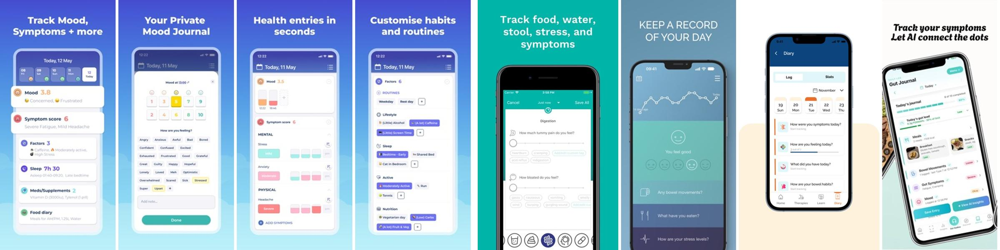</div><figcaption><b>Input close-ups</b>: Bearable mood grid + emotion chips, severity blocks and factor chips; Cara sliders + tag pills; Bowelle check-in; Gut-Buddy question cards; IBS Pal journal checklist.</figcaption></figure>
  <figure><div class="scroll">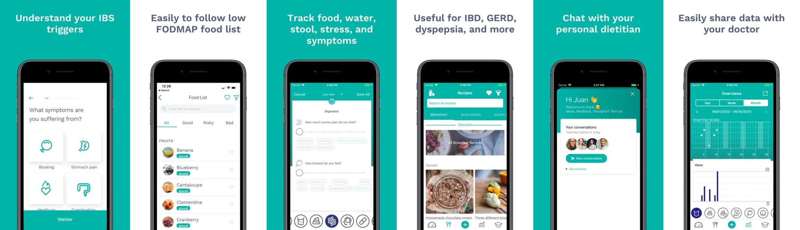</div><figcaption><b>Cara Care</b>: symptom onboarding, food list rated good / risky / bad, slider + tag entry, dietitian chat, monthly overview.</figcaption></figure>
  <figure><div class="scroll">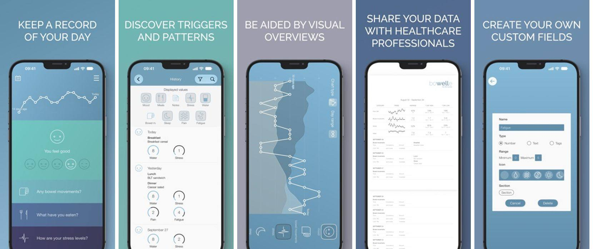</div><figcaption><b>Bowelle</b>: 1-screen daily check-in, filterable history, doctor PDF, custom field builder.</figcaption></figure>
  <figure><div class="scroll">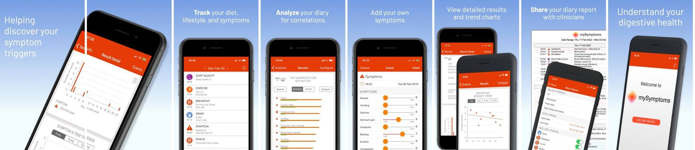</div><figcaption><b>mySymptoms</b>: timeline diary, "top suspects" per symptom, intensity trends, clinician report.</figcaption></figure>
  <figure><div class="scroll">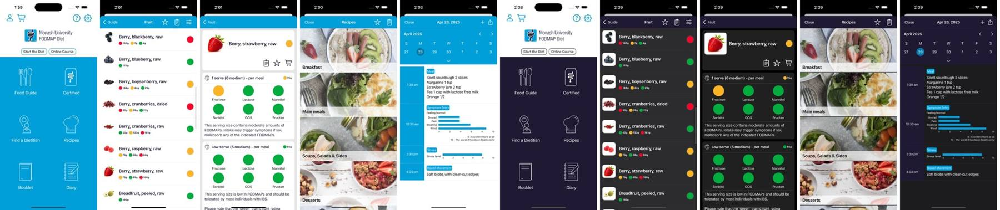</div><figcaption><b>Monash FODMAP</b>: traffic-light guide, per-serve breakdown by FODMAP group, diary timeline.</figcaption></figure>
  <figure><div class="scroll">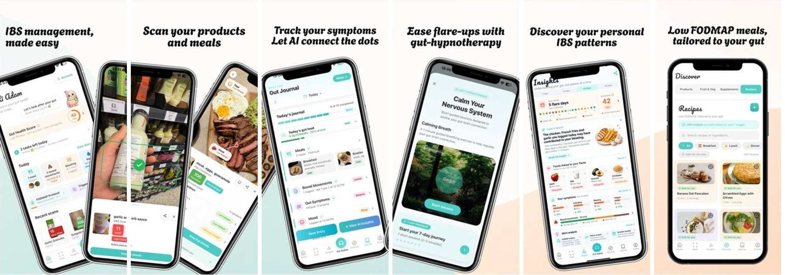</div><figcaption><b>IBS Pal</b>: gut score, meal scan, journal checklist, flare insights, foods linked to flares.</figcaption></figure>
  <figure><div class="scroll">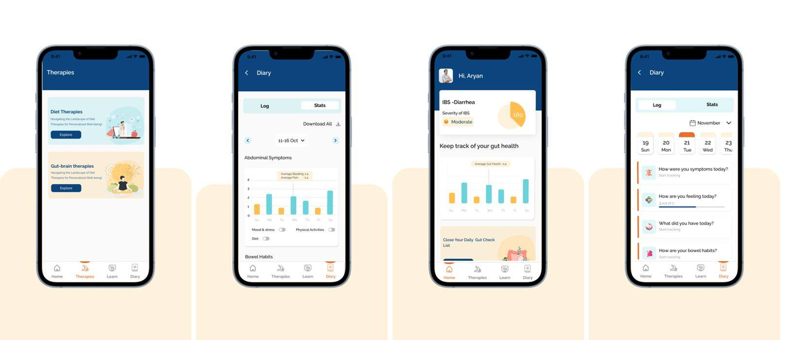</div><figcaption><b>Gut-Buddy</b> (India): therapies hub, weekly stats, IBS-D severity score, diary prompts.</figcaption></figure>
  <figure><div class="scroll">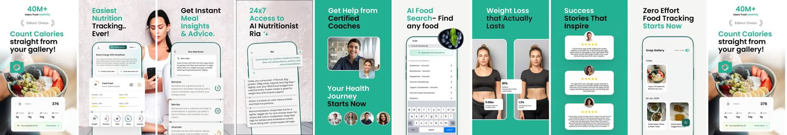</div><figcaption><b>HealthifyMe</b> (India): gallery photo logging, meal score, AI nutritionist. A reference for Indian food logging.</figcaption></figure>
  <figure><div class="scroll">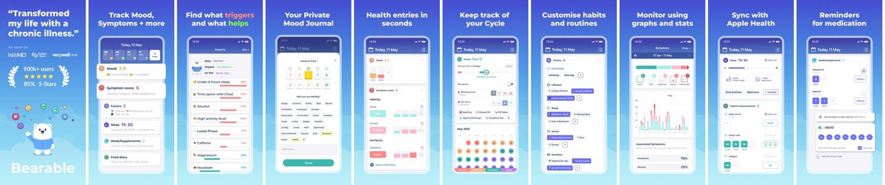</div><figcaption><b>Bearable</b>: what hurts / helps ranked by %, factor tags, cycle, med reminders.</figcaption></figure>
  <figure><div class="scroll">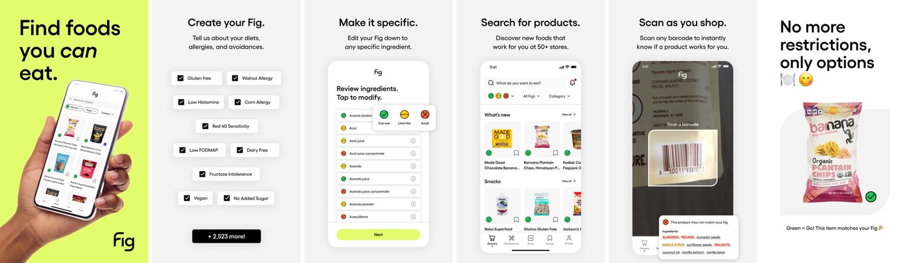</div><figcaption><b>Fig</b>: diet picker, ingredient-level Can eat / Limit / Avoid, scan result.</figcaption></figure>
  <figure><div class="scroll">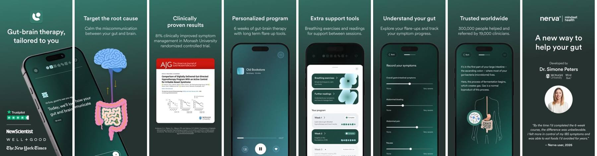</div><figcaption><b>Nerva</b>: 6-week audio program, symptom sliders, gut education.</figcaption></figure>
</section>

<section>
  <h2>Method and limits</h2>
  <ul class="note" style="border:0;padding-left:1.2em">
    <li>Reddit (r/WholeGutHealing thread) is blocked for my browsers, so apps came from web, App Store and Play Store research. The commonly cited Reddit picks (Cara, Bowelle, mySymptoms, Monash, Nerva) are all covered.</li>
    <li>Mobbin wasn't connected (Arc isn't linked to the Claude extension yet), and these niche apps are mostly not on Mobbin.</li>
    <li>Screens are store marketing screenshots, not full logged-in flows. I didn't create accounts in any app.</li>
    <li>Ratings are from the US store unless marked IN (India store), as of 13 Oct 2026.</li>
  </ul>
</section>

<section>
  <h2>Sources</h2>
  <ul class="sources">
    <li><a href="https://play.google.com/store/apps/details?id=com.gutbuddy.gutbuddyapp">Gut-Buddy · Play Store</a></li>
    <li><a href="https://play.google.com/store/apps/details?id=com.GutHealthIBS.guto">Guto · Play Store</a></li>
    <li><a href="https://apps.apple.com/in/app/healthify-ai-calorie-tracker/id943712366">HealthifyMe · App Store</a></li>
    <li><a href="https://apps.apple.com/us/app/cara-care-ibs-fodmap-tracker/id1133687886">Cara Care · App Store</a></li>
    <li><a href="https://www.bayer.com/media/en-us/bayer-acquires-hidoc-technologies-and-cara-care-app-for-irritable-bowel-syndrome/">Bayer acquires Cara Care</a></li>
    <li><a href="https://bowelle.com/">Bowelle</a></li>
    <li><a href="https://healthify.nz/apps/b/bowelle-the-ibs-tracker">Bowelle review · Healthify NZ</a></li>
    <li><a href="https://apps.apple.com/us/app/mysymptoms-food-diary/id405231632">mySymptoms · App Store</a></li>
    <li><a href="https://justuseapp.com/en/app/405231632/mysymptoms-food-diary/reviews">mySymptoms reviews</a></li>
    <li><a href="https://apps.apple.com/us/app/monash-uni-low-fodmap-diet/id586149216">Monash FODMAP · App Store</a></li>
    <li><a href="https://apps.apple.com/in/app/ibs-pal-fodmap-scanner/id6749382445">IBS Pal · App Store</a></li>
    <li><a href="https://apps.apple.com/us/app/fig-food-scanner-recipes/id1564434726">Fig · App Store</a></li>
    <li><a href="https://apps.apple.com/us/app/nerva-gut-brain-program/id1467398796">Nerva · App Store</a></li>
    <li><a href="https://www.lin.health/insights/best-apps-ibs">Best apps for IBS · Lin Health</a></li>
    <li><a href="https://www.gentlegutapp.com/best-apps-for-ibs/">Best apps for IBS · Gentle Gut</a></li>
    <li><a href="https://www.nirvanaclinics.com/ibs-diet-plan-indian/">IBS diet plan for Indian kitchens</a></li>
    <li><a href="https://caloriematterss.com/best-dals-for-ibs/">Best dals for IBS</a></li>
  </ul>
</section>
</main>
